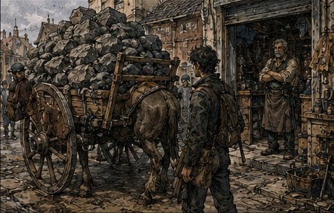
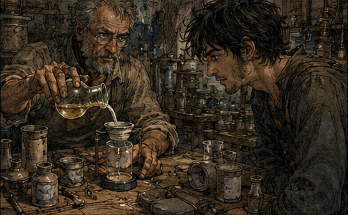
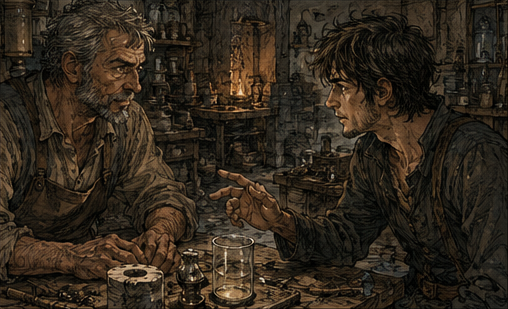

Buying garbage turned out to be the easy part. Toma sold me a cart of Kestrin shale for two silver and the expression of a woman who had just discovered that fools could be harvested. I paid another copper to have it delivered to Pell's workshop, which left me standing in the east market with borrowed money in my pocket and the unpleasant awareness that every coin now had Antonius Vale attached to it.
Garbage had always been underrated. Not philosophically. Literally. Adventurers were terrible at distinguishing 'worthless' from 'not currently worth carrying.' I had made money on that distinction later. Bones nobody wanted until necromantic licensing changed. Slime residue before preservative alchemy improved. Broken cores once artificers learned to laminate them. The shale was not unique. It was simply the first future waste product my nineteen-year-old purse could reach.
That thought nearly sent me back toward the guild salvage yard to start buying every cheap material I vaguely remembered becoming useful. I stopped myself before enthusiasm became inventory. One experiment first. If I could not make one cart of remembered garbage profitable, owning six different kinds of remembered garbage would merely make me a collector.
The order had not changed yet. Prove the shale. Protect enough of the idea that I could profit from it. Pay Antonius before the interest or the man himself became a larger problem. Then divert part of whatever remained into mana conditioning. Money first, magic second, because being the greatest support mage in my old life meant very little while my current body could not cast a useful spell and my current purse could not afford to teach it.
That was the board that morning. Pell was the technical gate. Antonius was the financial clock. Magic was still an expense I could not yet afford. Keep the chain narrow. Find out which assumption failed first.
Eight days. Thirty-five percent. If the experiment failed, my labor belonged to him until the debt was cleared. I had accepted worse contracts. That was not comforting. Pell was less pleased to see the shale than Toma had been to sell it.
"You actually bought it," Pell said.
"I said I would," I told him.
"People say many things," Pell said.
"Most of them should stop," I said.
Pell looked past me at the cart. "That's too much."
"Good."
"No, Greg. I mean physically. I don't have room for that."
I turned and looked at his workshop. He was right. Arwick Works was currently a room with ambitions. One bench. Two kilns, one of which looked old enough to remember monarchy. Shelves crowded with lamp regulators, cracked ceramic housings, brass fittings, wire, powdered reagents, and several objects I could not identify despite having lived through the next forty years. That pleased me. Not everything needed to become a memory.

"How much do you need?" I asked.
"For a test? A bucket," Pell said. I looked at the cart. The carter looked at me.
"Take the rest back," I told the carter.
"Paid delivery," the carter said.
"I know," I said.
"Delivery goes one way," he said.
"Of course it does," I said.
Pell folded his arms. I paid for the lesson. By the time the shale was stacked badly beside his rear wall, my elegant investment thesis had acquired hauling fees, storage problems, and a man named Hobb who charged three copper to move something I had just paid someone else to move. I wrote that down too.
The hauling mistake irritated me because future knowledge could not fix it. I knew the shale became valuable. I did not know how much space Pell had behind his workshop, what Hobb charged, or how many times I could afford to move the same stupid rocks. Grand history was cheaper in my head than one bad delivery in the present. Old Greg had learned logistics eventually. Young Greg was apparently paying tuition twice.
NOT EVERYTHING SCALES.
Pell read over my shoulder.
"Are you writing lessons?" Pell asked.
"I'm preventing myself from becoming stupid twice," I said.
"Does that work?" Pell asked.
"Historically? No," I said.
Pell gave me the look again. People had several for me already: nineteen-year-old talking like an old man, Bronze adventurer knowing too much outside his profession, stranger staring at a face as if searching for something behind it. Pell had developed his own. Brilliant or insane, with growing evidence for both.
"Six silver," he said.
"For the test," I said.
"For my time," Pell corrected.
"You said six yesterday," I said.
"And today it remains six. Remarkable stability," Pell said.
I counted the coins onto his bench. It hurt. That was useful. In my old life, by the end, six silver had been invisible. I had spent more than that on wine I did not particularly like because someone important had selected the bottle. Now I watched each coin leave my hand. Capital had weight again. So did mistakes. Pell picked up a shale chip. "Tell me exactly what you think this does." I almost told him. Not the whole truth. The future was not a truth I could hand him. But I nearly gave him the answer as I remembered it. Then I stopped. Because I did not remember the answer. I remembered filter housings. I remembered the Arwick stamp.
Weight made me think of the loan agreement folded inside my coat. I touched it to make sure it was still there, then wondered why. Antonius did not need the paper to remember I owed him. I did. The document was less a contract than a physical reminder that every clever idea currently had a clock attached to it.
Eight days sounded generous when I was sitting across from him. Inside Pell's workshop, watching six silver become somebody else's afternoon, it sounded like a very short week. I remembered somebody explaining, years after the discovery, that the shale's trace mana made it useful for binding residue during high-heat processing. That was not a formula. That was a story about a formula.
I pulled the memory apart anyway. Who had been talking? Workshop or banquet? Was the speaker an artificer or merely somebody repeating the explanation badly? Had the useful property been binding residue, or resisting it? The more I pushed, the less trustworthy the detail became. Good. Better to discover that at a bench than after betting the rest of the loan.
"What?" Pell asked.
"I was about to pretend I knew more than I do."
"That's new."
"I contain multitudes." He waited. I picked up a chip.
"I think the trace mana is the useful part. Powdered. Suspended in a ceramic mix or laid as a layer. Heat activates something. Maybe the structure changes. Maybe it just exposes more surface."
"Those are different mechanisms."
"Yes," I said.
"Which one?"
"I don't know."
Pell's expression flattened. I pointed at him. "That is why you're being paid."
"No. I'm being paid to test a hypothesis."
"Excellent. We have several."
"You have guesses."
"Those are cheaper."
He muttered something about adventurers and began working. I stayed. Pell objected. I stayed anyway. Not because I needed to supervise him. Because I needed to see what the present knew. That distinction became important within the first hour. Pell ground the shale much finer than I expected. He washed part of it. Heated another portion dry. Mixed samples into two cheap clay bodies and one better ceramic paste. He kept notes in a narrow hand and labeled everything. I understood perhaps half of what he was doing. That bothered me more than it should have.
I had assumed the advantage lived in the answer. Pell kept showing me otherwise. I knew the shale mattered; he knew how to make that claim survive contact with a kiln. Old Greg had rarely been the best person in the room at every task. He had been very good at finding the person who was.
That was closer to support than I wanted to admit. I had planned around artificers, healers, scouts, and killers for decades. I knew enough about their disciplines to coordinate them. Enough was dangerous. It was very easy to mistake knowing what an expert needed for being the expert.
"What?" I asked.
"Nothing," Pell said.
"You've been staring at my hands for five minutes," Pell said.
"I was trying to remember someone," I said.
True, but incomplete. I was trying to decide whether Pell belonged on the list in my head. If his surname really became the Arwick mark I remembered, this cramped workshop was the beginning of something. If not, he was still the man doing the work in front of me.
"Me?" Pell asked.
"Possibly," I said. He set the cup down.
"That's unsettling," Pell said.
"Yes," I said.
"Do you do that with everyone?" Pell asked.
"Currently," I said.
"Why?" Pell asked. I considered telling him that one day his surname might be stamped on equipment used across three kingdoms. Instead I said, "I was away from Carrow a long time."
"You're nineteen," Pell said.
"Emotionally," I said.
Pell stared. I smiled. He returned to the kiln. By afternoon, the first samples had failed. One cracked. One warped. One smelled terrible. The fourth did absolutely nothing interesting. I watched Pell scratch a line through it.
"Again," I said.
"You paid for one test," Pell said.
"I paid for your time," I said.
"You paid for six silver of my time," Pell said.
"How much time remains?" I asked.
He looked at the window. "Enough to tell you this was a bad idea." I felt the first real pinch of fear. Not panic. Arithmetic. Antonius's money sat in my pocket becoming smaller. The shale was supposed to matter. I knew that. No. I thought I knew that. I went outside. The alley behind the cooper smelled like wet wood and horse piss. I leaned against the wall and closed my eyes. Filter housing. White ceramic. Blue maker's stamp.
ARWICK.
Was it Kestrin shale? I searched. A banquet thirty years later. Someone talking beside me while I watched a duchess lie badly about a border dispute. Wrong memory. Workshop. Smoke. A woman with burned fingertips. Not Pell. Arwick. Was her name Arwick? I could hear myself saying, "Use the old Kestrin mix." Maybe. Or "Don't use the old Kestrin mix." Fuck. Memory offered confidence without subtitles. I opened my eyes. This was exactly the trap. I had remembered the outcome and reconstructed the cause. The reconstruction was good enough to interest Pell. That did not make it true. I could lose the loan. Fine. I could work it off. Fine.
One bad memory did not erase forty years. It did change what I was allowed to buy with them. Memory could generate leads. Pell's bench got to decide which ones survived.
"Greg," Pell said. Pell stood in the doorway.
"What?" I asked.
"Come look," he said.
The fifth sample had not worked either. The sixth had. Not dramatically. No glow. No miraculous transformation. Pell had run a cheap alchemical wash through a porous ceramic disk containing a small percentage of powdered shale. The liquid collected below was clearer than the control. Barely. But measurably. Pell ran it again. Same result. He stopped talking. That was when I knew we had something.

I stared at the disk and remembered another successful test from much later in life. Different project. Different people. We had celebrated the first positive result for an entire night and discovered the next morning that the result came from contamination in the measuring vessel. I had learned two things: never celebrate before replication, and never let Daro choose the celebratory liquor. Daro. Was Daro alive now? Almost certainly. Where? No idea. I nearly wrote his name down before remembering I was standing in Pell's workshop and had no paper in my hand.
"How good?" I asked.
"Not good," Pell said.
"Better?" I asked.
"Yes," Pell said.
"How much better?" I asked.
"I need proper measures," Pell said.
"Guess," I said.
"I don't guess," Pell said.
"Everyone guesses. Professionals write the guess down," I said. He glared at me.
"Ten percent?" I asked.
My heart kicked. Ten percent was enough. Not for the future product I remembered. Not yet. Enough for proof. Pell looked at the disk. Then at the shale. Then at me.
"Where did you get this idea?" Pell asked. I smiled. He did not.
"Greg," Pell said.
Pell Arwick. Lamp repairer. Small workshop. Good hands. Careful notes. Future surname, maybe. I still did not know whether he became rich, whether somebody inherited the name, or whether I was remembering the wrong Arwick entirely. What did I owe the man in front of me if my memory had pointed me toward work he had not found yet? Inconvenient question. I answered a different one.

"How quickly can you improve it?" I asked.
Pell's mouth tightened.
"That's not what I asked," Pell said.
"I know," I said.
"Where did you get the idea?"
"From something I saw a long time ago," I said.
"You were a child a long time ago," Pell said.
"I was very observant," I said.
"Greg," Pell said. I leaned over the bench.
"If I tell you I don't have an answer you will believe, will you stop asking?" I asked.
"No," Pell said.
"Then we've discovered another stable property," I said. He should have thrown me out. Instead he looked back at the sample. Curiosity beat suspicion, for now.
Useful. I hated how quickly the word appeared.
Useful. I corrected it. Interested. Better.
"What do you need?" I asked.
"Better clay. Controlled heat. Different ratios. Proper test reagents," Pell said.
"Cost?" I asked. He named a number. I swore. Pell smiled for the first time all afternoon.
"You wanted research."
"I wanted profitable research."
"Those are different."
"Apparently."
I checked the remaining silver. I could fund it. Barely. Then I would have almost nothing left. Antonius was due in eight days. The sensible move was to take the weak positive result back to him and ask for more capital. The better move was to improve the result first. The Greg move was to do both while pretending there was no distinction.
"I need a written statement," I said.
Pell frowned. "Of what?"
"What we tested. What happened. Your estimate that further trials are justified," I said.
"I'm not putting my name on your sales pitch," Pell said.
"Not a sales pitch. A technical observation," I said.
"For whom?" Pell asked.
"A lender," I said.
"You borrowed the money?" Pell asked.
"Obviously," I said. Pell stared at me.
"How much?" Pell asked.
"Enough," I said.
"From who?" Pell asked.
"Antonius Vale," I said. He put both hands on the bench.
"You borrowed from Vale to buy garbage."
"When you say it like that, it sounds irresponsible," I said.
"It is irresponsible," Pell said.
"Then say it more quietly," I said.
Pell walked to the other side of the workshop and stood there. I watched him think and felt the roles assembling anyway. Cautious artificer. Technical credibility. Future manufacturer. Partner. Asset. No. Pell. A person named Pell who wanted his work to remain his.
I had always been good at turning people into roles because roles were easier to arrange than people. Pell was especially tempting because his surname already occupied some unknown place in my future.
"If I write anything, it says exactly what happened. No claims. No projections."
"Perfect," I said.
"And my name stays attached to the work," Pell said.
That surprised me, mostly because nineteen-year-old Greg would have tried to own the idea. Old Greg knew better. Mostly.
"Yes," I said.
Pell narrowed his eyes. "That easy?"
"No. I'm growing," I said.
"Into what?" Pell asked.
"Unclear," I said.
He wrote the statement. I took it to Antonius before sunset. His storage-room office still had the ham. The scarred man from yesterday was there too; his name, I learned, was Jorren. Nothing surfaced when I searched for him. On the walk over I rehearsed the argument three ways, then caught myself rehearsing for the Antonius I remembered rather than the one I had actually met.
So I changed the plan. Give him the evidence. Let him ask. Watch what present Antonius cared about. Yesterday I had been a Bronze adventurer selling confidence. Today I had Pell's name on a test that had produced a measurable effect. Not a business. Evidence.
"What?" I asked.
"Nothing," Pell said.
"You keep looking at me."
"I have a memorable-face problem."
"Your face?"
"Other people's." Antonius held out his hand. I gave him Pell's note. He read it twice.
"Ten percent."
"Approximately."
"Meaning?"
"Meaning it worked badly."
Jorren laughed. Antonius looked at me. "And you came here proud."
"I came here early."
"What do you want?"
"The rest of the loan I asked for."
"No," Antonius said.
"Half."
"No," Antonius said.
"A quarter."
"No," Antonius said. I sat back.
"You're being difficult."
"I gave an unsecured loan to a Bronze adventurer yesterday. Today he returned with a piece of paper saying his garbage is slightly less useless than expected."
"That is a cruel summary of scientific progress." Antonius slid the paper back.
"You owe me."
"I know," I said.
"Then why would I increase my exposure?"
"Because yesterday you were lending against me. Today you're lending against evidence."
"Bad evidence."
"Better than no evidence." He almost smiled. I leaned forward.
"And because if you don't, I'll find someone else."
Jorren stopped laughing. Antonius did smile then.
"You think you can?"
"Yes," I said.
Could I? Probably. Maybe. There were merchants. Guild factors. Alchemists. Pell himself if I could convince him to risk his workshop. I did not know their current names. I did know how money behaved around opportunity. That was enough to make the threat credible to me. Antonius studied my face.
"Who?"
"I don't know yet."
Jorren barked a laugh. Antonius's smile widened.
"At least you're an honest liar."
"I've had practice."
"At nineteen?" I shrugged. He drummed two fingers on the desk.
"What is the actual play?"
There. Not the loan. The play. I liked him more for asking. Yesterday the shale had been remembered garbage. Now it was a weak result, a technical witness, and a reason to ask for another round of capital. That was enough.
"We prove the filtration effect. If it's material, we secure supply before anyone cares. Pell develops the process. We sell the process, manufacture the filters, or license both depending on capital."
"We."
"Whoever pays."
"You've already promised Arwick a share?"
"His name stays on the work."
"That's not a share."
No. It wasn't. I disliked that Antonius noticed.
"What does he get?" Antonius asked.
"I haven't decided."
"Has he?"
"No," I said.
"Then you're not partners."
"I didn't say we were." Antonius leaned back. For a moment I saw the older man inside him. Or projected him there.
"How much do you think the idea is worth?" he asked. I nearly answered with the future. A fortune. Wrong. Today it was worth one weak test and a cart of garbage.
"Nothing yet." Antonius nodded.
"Good." He opened the cabinet. Not the full amount. More than I expected.
"I want first refusal on financing," he said.
"Limited."
"First refusal."
"For thirty days."
"Six months."
"Two."
"Four."
"Three."
"Fine."
"And if you sell the process during that period without offering it to me first, the debt doubles."
"That's predatory."
"Yes," I said.
"Good. I was worried you were losing your touch."
His eyes narrowed again. I needed to stop doing that. He pushed the silver across. The shale might eventually solve the money problem. It would not solve my body. In my first life I had spent six more years pretending the sword was going to make me exceptional. I had no interest in repeating that delay.
"What do you know about mana conditioning?"
That question surprised him.
"Nothing," Antonius said.
"Who in Carrow does?"
"Guild."
"Anyone better?"
"Why?" Antonius asked.
"I want to learn magic."
Jorren looked at my sword. Antonius looked at my Bronze plate.
"You're a warrior."
"Allegedly."
"You cast?"
"No," I said.
"Then why now?"
Because six years from now a sexual fad would accidentally reveal that I had wasted my youth.
"Career development." Antonius laughed. Actually laughed. That was new.
"Go to the guild," he said. "Ask for Hessa Marr."
The name hit. Hessa. I went still. Antonius noticed. Of course he did.
"You know her?"
Did I? Old woman. White braid. Cane. No. Instructor. Barrier. Someone yelling at me. Not Hessa. Maybe. I could see a funeral. Whose?
"Hessa Marr," Antonius repeated. I searched harder. That only made it worse. There was something there. A memory with no label.
"I know the name."
"From?" I looked at him.
"Unreliable people."
Jorren groaned. Antonius waved me out. I left with more borrowed silver and a name that would not stop scratching at the inside of my skull. The guild was busiest at dusk. Parties returning. Contracts closing. Healers complaining. Porters weighing salvage. The smell of sweat, oil, wet leather, cheap stew, and minor triumph. Home. That word arrived before I could stop it. For most of my first life, guild halls had been home. Not this one. All of them. The noise settled something in me. Then Sella saw me.
A shield hit the floor somewhere to my left. The sound dragged up a memory of a different guild hall, a different shield, and a man named Corren insisting the dent proved he'd blocked a troll. It had been an ogre. I had corrected him in front of six people because I enjoyed being right more than I enjoyed Corren. He never forgave me. I could not remember whether he survived the Northern Gate.
That was happening constantly now. Noise became people. Smells became campaigns. A laugh could turn into a dead friend until I looked over and found a stranger. I had wanted forty years of experience back. Apparently it came without a search function.
"You."
"Me."
She was behind the counter now. That felt wrong. Later Sella had possessed an office, three assistants, and the terrifying ability to make veteran captains apologize for forms they had not yet failed to file. Now she was sorting contract slips.
"What do you want?" she asked.
"Hessa Marr." Sella stopped. That was not encouraging.
"What?" I asked.
"I was told to ask for Hessa Marr."
"Who told you?"
"Vale."
Her expression worsened.
"Of course."
"Do you know him?"
"Everybody knows him."
Not yet, I thought. I leaned closer.
"How well?" Sella leaned away.
"There. You're doing it again."
"What?" I asked.
"Looking at me like you're trying to remember where you buried me."
"That is disturbingly specific."
"Who are you?"
"Greg," I said.
"I know your name."
"Progress."
She did not smile. I looked at her and tried, deliberately this time, not to search the future. Sella now. Young clerk. Ink on her fingers again. Hair pinned badly because she had probably redone it during shift. A small burn on her wrist. Tired. Annoyed. Competent enough that three people had asked her questions while we were speaking and she answered all three without losing my thread. That was useful information too.
"Hessa?" I asked.
"Training annex. Basement."
"Thank you."
"Greg," Sella said. I turned.
"If Vale sent you, don't sign anything without reading it." I smiled.
"I never do."
"You look exactly like someone who does."
Fair. The training annex had six practice rooms. Hessa Marr occupied the smallest. I knew her when I saw her. Not personally. Historically. That was different. Hessa Marr had written the Marr Primer. No. Had she? The primer was Marr. H. Marr. I had used it later when retraining a noble's son whose tutors had filled his head with expensive nonsense. I had complained about it. What had I complained about? Too conservative. Excellent foundations. Terrible diagrams. I smiled. Hessa looked up from a ledger. She was perhaps forty. Broad face. Hair tied in a knot. Sleeves rolled to the elbow. No cane. Of course no cane.
I did not remember Hessa as a beloved mentor. I remembered Marr attached to foundational instruction, and Antonius had independently sent me to her. Good enough to test. I needed her to tell me what this nineteen-year-old body actually had and what it lacked.
"Can I help you?" I stared. She sighed.
"Is there something on my face?"
"No," I said.
"Then stop."
"Sorry." I sat opposite her.
"Antonius Vale said you teach mana conditioning."
"Vale sends me people he wants injured."
"Comforting."
"What do you want?"
"To learn."
"Magic?"
"Eventually."
"Have you tested?"
"No," I said.
"Why not?"
"I was busy being wrong about my career." Hessa looked at the sword on my hip.
"Warrior?"
"Allegedly." She held out her hand.
"Token." I gave her the Bronze plate. She checked it.
"Two years registered."
That answered a question I had not thought to ask. Two years. Seventeen. I had joined at seventeen. Yes. That felt right. Another piece clicked into place. Hessa pushed the token back.
"You've been active?"
"Enough," I said.
"Injuries?"
"Not currently."
"Mana exposure?"
"Dungeons."
"Formal channel work?"
"No," I said.
"Spell attempts?"
"One."
Her eyes sharpened.
"When?"
"This morning."
"What spell?"
"Barrier."
"Without conditioning?"
"Yes," I said.
"Why?" Hessa asked.
"Optimism."
"Result?"
"Headache. Tingling hand."
"Good."
"Good?"
"You didn't rupture anything."
"Excellent standard." She stood.
"Come here."
The test was humiliating. Not because it hurt. Because I knew exactly what she was testing and my body failed every expectation my mind supplied. Mana response. Poor. Channel definition. Almost nonexistent. Reservoir. Small. Control. Interesting. Hessa repeated that one.
I knew what a good mana response looked like. I had coached it, enhanced it, planned around fractions of efficiency most adventurers never noticed. Now Hessa asked my own body for the magical equivalent of lifting a finger and the response arrived late, weak, and slightly confused.
For one stupid instant I wanted to tell her who I became. Not because it would help. Because I wanted the room corrected. I wanted the hierarchy restored. I wanted her to understand that the boy failing a beginner's exercise had once stood among seven S-class adventurers in the world. The impulse was so childish that I almost laughed. There he was. Greg. Still desperate for the audience to know when he was impressive.
"Again," I said. I did. She watched my hand.
"Again," I said.
Third time.
"What?" I asked.
"Who taught you?"
"No one."
"Don't lie."
"I'm not."
"You adjusted."
"Yes," I said.
"How?"
"You told me what was wrong."
"I told you the sensation was collapsing toward the thumb."
"Yes," I said.
"Most beginners don't know what that means." I almost said, It was obvious. That sentence had cost me years the first time. So I shut my mouth. Hessa noticed that too.
"What were you going to say?"
"Nothing useful."
"Again," I said.
We repeated the exercise. My capacity was terrible. My control was not. Not good. Not yet. But the shape was there. The old mind inside a young magical body. Hessa sat down.
"You're strange."
"I've had a productive day."
"You cannot cast Barrier."
"I know," I said.
"You may be able to in a few months." I stared at her.
Months.
I had not brought my old reservoir back. I had not smuggled S-class power into a young body. What I had brought was recognition: I understood what Hessa was correcting and could adjust faster than a true beginner. I could not skip the foundation. I might stop wasting years building it by accident.
At twenty-five, during the Barrier craze, I had learned quickly because six years of dungeon exposure and physical training had already done work I had never noticed. Hessa had just put a timetable on doing that work deliberately.
Months. My plan changed while she was still speaking.
"What if I train every day?"
"Then you'll injure yourself."
"Twice a day?"
"Did you hear me?"
"Yes," I said.
"No, you heard words." I smiled. Hessa did not. Good instructor.
"What is the fastest safe progression?" I asked.
"Why?" Hessa asked.
"I dislike waiting."
"That is not a reason."
"It has governed most of civilization."
"Three sessions a week. Daily breath work. Dungeon exposure counts, but only if you're not exhausted. Nutrition."
"Four sessions."
"Three."
"I'll pay."
"Then you can pay for three."
"You're difficult."
"So I've been told."
I thought of the silver in my coat. Research. Debt. Training. Food. I had wanted capital because capital bought time. Now every use of it competed with another.
"Three," I said.
Hessa named the fee. I winced. She smiled. Apparently everyone enjoyed this part. I paid for the first week. When I returned to Pell's workshop, it was dark. He was still there. Three new disks sat beside the kiln.
"You're late," he said.
"You missed me."
"No," Pell said.
"Results?"
"Better."
That word hit harder than it should have. Pell showed me. Not ten percent. Closer to twenty. Still crude. Still inconsistent.
Real.
I laughed. Pell did not. Then he did, a little. I looked at the disks, the shale, the notes, Pell's tired face, and my mind began moving. Supply. Tests. Ownership. Guild salvage contracts. Manufacturing. Licensing. Antonius. Arwick. How much could I secure before anyone else noticed? How fast could Pell improve it? Who did I need? Who could I cut out? The thoughts came cleanly. Comfortably. Pell was saying something. I had stopped listening.
"Greg," Pell said. I looked up.
"What?" I asked.
"I said if this becomes something, I'm not your employee." I blinked. Had I said something aloud? Apparently my face had.
"I didn't say you were."
"You looked at my workshop like you were measuring it." I glanced around. I had been.
"Sorry."
"No, you're not."
"If we continue, we decide terms before the next round."
My first instinct was irritation. My second was respect. My third was calculation.
Dangerous. Useful. Person. I exhaled.
"All right."
"All right?"
"Tomorrow. We write terms." Pell looked suspicious.
"Fair terms."
More suspicious.
"I know what fair means."
"Do you?"
That landed somewhere old. Faces. People I had pushed because I could. People I had made stronger. People I had made useful. People who had thanked me and hated me, sometimes in the same conversation. I looked at Pell. Not Arwick Works. Not a stamp on a future filter. Pell, in a rented room, after spending his entire day testing my stupid idea because curiosity had gotten its teeth into him.
"Yes," I said.
Then, because the truth deserved precision:
"I think I do." Pell nodded slowly.
"Tomorrow."
I left. Carrow was dark and wet, lanterns reflected in the street. I had begun the day with three copper. I ended it in debt to a future crime lord, financially entangled with an artificer whose future I only half remembered, enrolled in magical conditioning six years ahead of schedule, and carrying a technical result that might become valuable if my memory had not lied about everything around it. A sensible person would have called that unstable. I called it momentum.
The next move was not another miracle. It was keeping these pieces together long enough for one of them to start paying for the others. That was probably the first mistake.